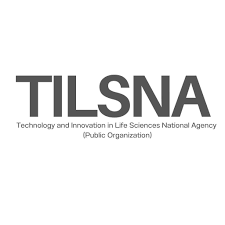
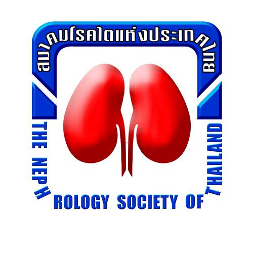
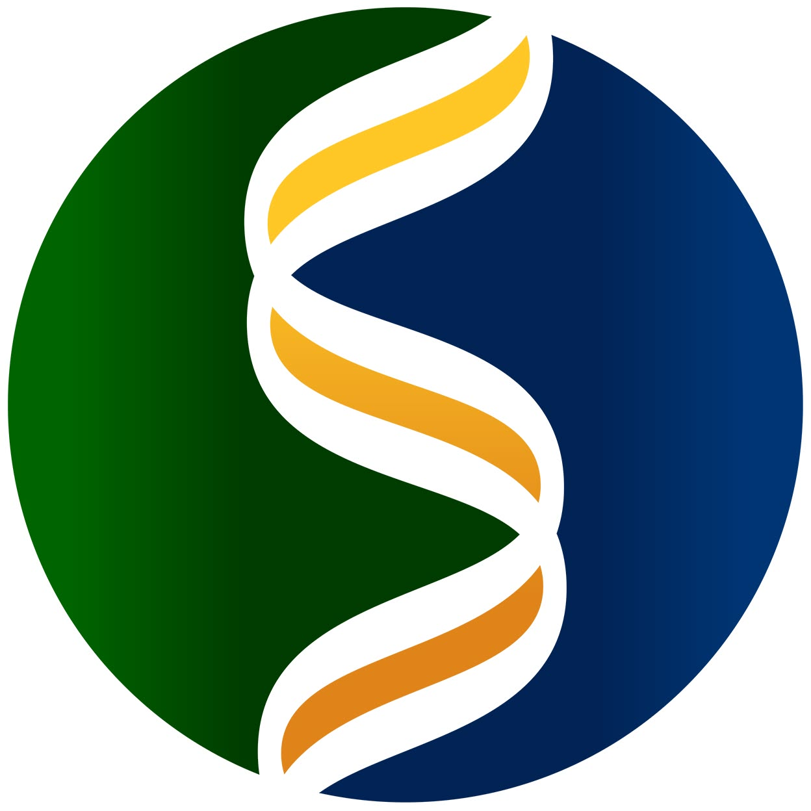

โรคไตเรื้อรังไม่ทราบสาเหตุ
CKD of unknown cause โดยเฉพาะไตวายอายุน้อย หรือมีลักษณะที่สงสัยโรคยีนเดี่ยว
บริการจีโนมิกส์คลินิกที่พัฒนาโดยทีมแพทย์และนักวิทยาศาสตร์ไทย ตั้งแต่การรับตัวอย่างและวิเคราะห์จีโนม ไปจนถึงการแปลผลโดยผู้เชี่ยวชาญ การรายงานผลอย่างปลอดภัย และการให้คำปรึกษาแก่แพทย์
A Thai-developed, end-to-end clinical genomics service for inherited kidney disease - from sample collection and genomic analysis to expert interpretation, secure reporting, and physician consultation.
KIDNEYOMICS RESEARCH GROUP
Why genetic testing matters
โรคไตหลายชนิดเกิดจากการเปลี่ยนแปลงทางพันธุกรรม แต่ผู้ป่วยอาจแสดงอาการคล้ายโรคไตชนิดอื่น หรือไม่สามารถระบุสาเหตุได้จากการประเมินตามปกติ การตรวจพันธุกรรมช่วยเชื่อมข้อมูลทางคลินิกเข้ากับสาเหตุของโรคอย่างเป็นระบบ
สนับสนุนการวินิจฉัยโรคไตที่ยังไม่ทราบสาเหตุหรือมีลักษณะซับซ้อน
ประกอบการตัดสินใจเรื่องยาเฉพาะโรค ยากดภูมิคุ้มกัน และการปลูกถ่ายไต
ช่วยคัดกรองญาติ ให้คำปรึกษาทางพันธุกรรม และประเมินผู้บริจาคไตที่เป็นญาติ
พัฒนาความสามารถของบุคลากรและลดการพึ่งพาการส่งตรวจไปต่างประเทศ
Who should be tested?
เกณฑ์เบื้องต้นครอบคลุมหกกลุ่มโรคสำคัญ การพิจารณาส่งตรวจขึ้นกับข้อมูลทางคลินิก ประวัติครอบครัว และระยะของการพัฒนาบริการ
CKD of unknown cause โดยเฉพาะไตวายอายุน้อย หรือมีลักษณะที่สงสัยโรคยีนเดี่ยว
เช่น familial hematuria, Alport syndrome, steroid-resistant nephrotic syndrome และ FSGS ที่ไม่พบสาเหตุ
Tubulointerstitial disease, electrolyte disorders, RTA, nephrogenic DI และนิ่วหรือหินปูนในไตบางกลุ่ม
ความผิดปกติแต่กำเนิดของไตและทางเดินปัสสาวะร่วมกับประวัติครอบครัวหรืออาการอื่นที่เกี่ยวข้อง
ลักษณะไม่เหมือน ADPKD ทั่วไป เริ่มมีอาการในวัยเด็ก หรือผลตรวจอาจเปลี่ยนแนวทางรักษา
เช่น atypical HUS และ complement-mediated kidney disease บางกลุ่ม
Physician referral guide
ดาวน์โหลดเอกสารสองหน้าสำหรับอายุรแพทย์โรคไตและกุมารแพทย์โรคไต พร้อมข้อบ่งชี้ทั้งหกกลุ่มและขั้นตอนการติดต่อส่งตรวจ
ดาวน์โหลด PDFEnd-to-end service
โครงการกำลังพัฒนากระบวนการครบวงจรที่เชื่อมทีมผู้ส่งตรวจ ห้องปฏิบัติการ นักชีวสารสนเทศ และผู้เชี่ยวชาญทางคลินิกเข้าด้วยกัน
ตรวจสอบเกณฑ์ แจ้งข้อมูลทางคลินิก และรับแบบฟอร์มส่งตรวจ
เลือด EDTA หรือเยื่อบุกระพุ้งแก้ม พร้อมระบบติดตามตัวอย่าง
Sequencing, quality control, bioinformatics และการทบทวนโดยทีมสหวิชาชีพ
ส่งรายงานอย่างปลอดภัย พร้อมการประชุมหรือคำปรึกษาสำหรับแพทย์ผู้ส่งตรวจ
Science and quality
บริการได้รับการออกแบบให้เชื่อมหลักฐานระดับสากลกับความเชี่ยวชาญด้านโรคไตและบริบทของผู้ป่วยไทย
คัดเลือกยีนจากหลักฐานความสัมพันธ์ระหว่างยีนและโรค รวมถึงทรัพยากรจาก ClinGen
ใช้หลักการ ACMG/AMP และแนวทางจำเพาะโรคเมื่อมีหลักฐานรองรับ
บูรณาการ nephrology, clinical genomics, laboratory science และ bioinformatics
ติดตามตัวอย่างและผลวิเคราะห์ในแต่ละขั้นตอนเพื่อสนับสนุนการประกันคุณภาพ
พัฒนาระบบรายงานและการสื่อสารผลที่คำนึงถึงความปลอดภัยของข้อมูลพันธุกรรม
พัฒนากระบวนการสู่ความสอดคล้องกับมาตรฐาน ISO 15189 ในระยะต่อไป
Funded national pilot
ได้รับทุนสนับสนุนจาก TILSNA โดยร่วมมือกับสมาคมโรคไตแห่งประเทศไทย เพื่อทดสอบระบบในผู้ป่วย 80 รายจากทั่วประเทศ และเตรียมบริการให้พร้อมภายในสิ้นปี 2027
พัฒนา workflow รายงานผล และระบบสนับสนุนแพทย์ พร้อมดำเนินโครงการนำร่อง 80 ราย
ประเมินกระบวนการและเตรียมความพร้อมสำหรับการให้บริการแก่เครือข่ายแพทย์
ขยายเครือข่าย พัฒนาบุคลากร และสร้างฐานข้อมูลโรคไตทางพันธุกรรมของประเทศไทย
Clinical and scientific leadership
โครงการเชื่อมความเชี่ยวชาญด้านโรคไต เวชศาสตร์จีโนมิกส์ ชีวสารสนเทศ ห้องปฏิบัติการ และโครงสร้างพื้นฐานข้อมูล เพื่อพัฒนาบริการที่ใช้ได้จริงในระบบคลินิก
Adult Nephrology · Genetic Kidney Disease · Biobank-based Genomic Discovery
Bioinformatics · Next-generation Sequencing · Clinical Genomics
IT Infrastructure · Bioinformatics Pipeline Development
Nephrology · The Nephrology Society of Thailand · Chiang Mai University
Long-read Sequencing · Research-to-service Translation
Long-read Data Analysis · Clinical and Research DNA Analysis Pipelines
Precision Medicine · Clinical Genomics · Research-to-policy Translation
Funding and collaboration



For physicians and collaborators
โครงการยินดีรับการติดต่อจากอายุรแพทย์โรคไต กุมารแพทย์โรคไต โรงพยาบาล นักวิจัย และหน่วยงานที่สนใจร่วมพัฒนาบริการตรวจพันธุกรรมโรคไตในประเทศไทย